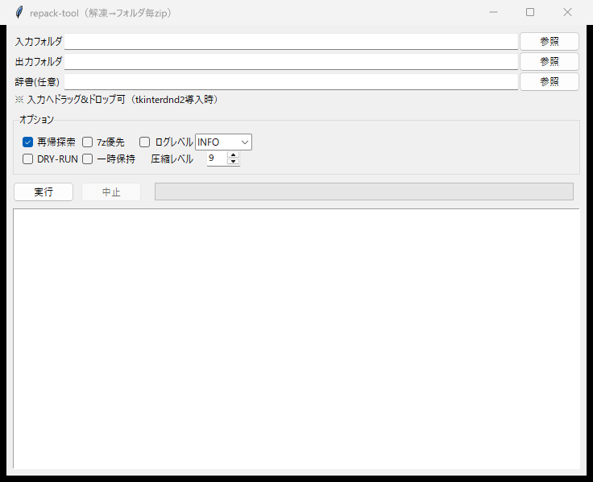
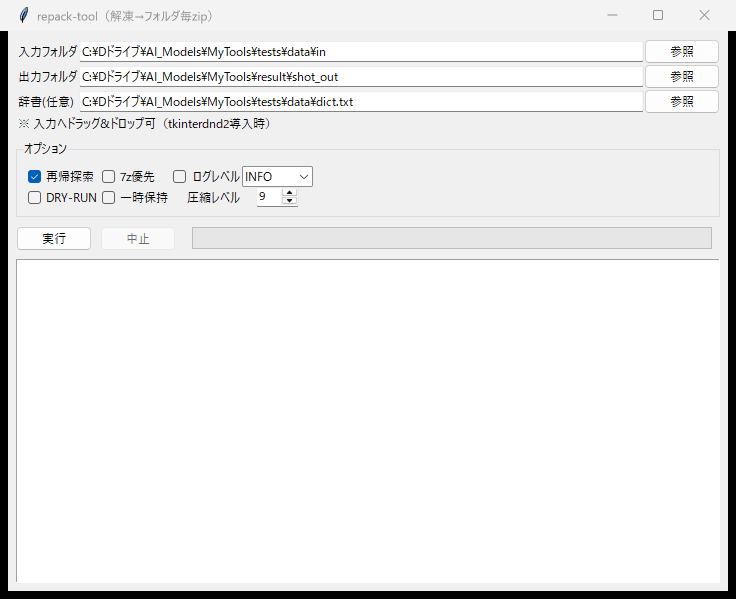
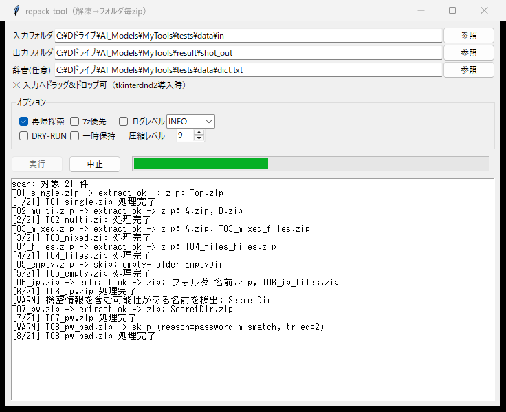
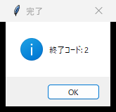
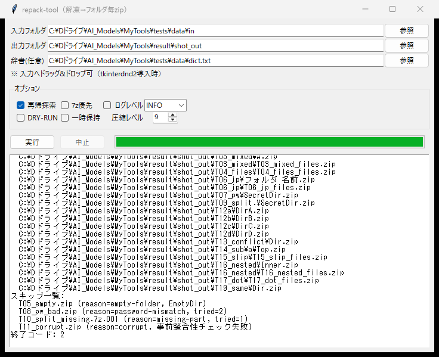

1本マニュアルについて
本マニュアルでは、repack-tool の GUI（グラフィカル画面）での操作方法を説明します。
コマンドプロンプトが苦手な方でも、画面の操作だけで「圧縮ファイルの解凍 → フォルダ毎の zip 化」が行えます。
| 対象 | repack-tool GUI（本マニュアルは 2026/09 時点のバージョンに基づく） |
|---|---|
| 動作環境 | Windows 10/11 + Python 3.10 以降（開発・検証は Python 3.12） |
| 対応形式 | 7z / zip / rar / tar.gz・tgz / tar.bz2 / tar.xz / gz / bz2 / xz（分割ファイル含む） |
2起動方法
コマンドプロンプトまたは PowerShell で、プロジェクトのフォルダ（MyTools）に移動して次のコマンドを実行します。
cd C:\Dドライブ\AI_Models\MyTools
$env:PYTHONPATH = "src"
python -m repack_tool.guistart_gui.bat を作成し、ダブルクリックで起動すると便利です。3画面の見方
起動すると次の画面が表示されます。大きく分けて「入力エリア」「オプション」「実行ボタン」「ログ」の 4 つの要素があります。

| 領域 | 説明 |
|---|---|
| 入力フォルダ | 解凍したい圧縮ファイルが保存されているフォルダを指定します。「参照」ボタンで選択するか、エクスプローラからドラッグ&ドロップもできます。 |
| 出力フォルダ | 作成した zip を保存するフォルダを指定します。入力フォルダと同じでも構いません（自動的に二重処理は行われません）。 |
| 辞書（任意） | パスワード付き圧縮ファイルを解凍する場合の、パスワード一覧ファイル（テキスト・1 行 1 件）を指定します。不要な場合は空のままで OK です。 |
| オプション | 処理内容を細かく制御します（詳細は「5. オプション詳細」）。初期状態のままで問題ありません。 |
| 実行 / 中止 | 実行で処理を開始します。処理中は進捗がプログレスバーとログに表示されます。 |
| ログ | 処理の経過・結果・エラーが表示されます。内容は出力フォルダの repack_日付_時刻.log にも保存されます。 |
4基本の使い方（5 ステップ）
入力フォルダを指定する
「入力フォルダ」の参照ボタンを押して、圧縮ファイルが入ったフォルダを選びます。
サブフォルダの中まで探したい場合は、オプションの「再帰探索」にチェックを入れます（初期状態で ON）。
出力フォルダを指定する
「出力フォルダ」の参照ボタンで、zip の保存先を指定します。
入力のフォルダ構造がそのまま再現されるため、整理された形で出力されます。
（必要なら）辞書ファイルを指定する
パスワード付きの圧縮ファイルを扱うときだけ、パスワードを 1 行ずつ並べたテキストファイルを指定します。
辞書内のパスワードを順に試行し、成功したものだけ解凍します。パスワードがログに出ることはありません。
「実行」ボタンで処理を開始する
入力が済んだら実行を押します。ボタンが押せない状態になり、「中止」が押せる状態に変わります。
進捗バーが伸び、ログに処理対象のファイル名と結果が流れていきます。


完了ダイアログを確認する
全件の処理が終わると「完了」ダイアログに終了コードが表示されます。

| 終了コード | 意味 | 対応 |
|---|---|---|
| 0 | 全件成功（スキップ・失敗なし） | そのまま出力をご利用ください |
| 2 | 処理完了（ただしスキップしたファイルあり） | ログの「スキップ一覧」で理由を確認してください |
| 1 | 致命的エラー（入力フォルダ未指定・入力＝出力の指定など） | ログの [ERROR] 行を確認し、設定を見直してください |
5オプション詳細
| オプション | 既定 | 説明 |
|---|---|---|
| 再帰探索 | ON | 入力フォルダ配下のサブフォルダも含めて圧縮ファイルを探します。OFF にすると入力フォルダ直下だけを対象にします。 |
| 7z優先 | OFF | 7-Zip（7z.exe）がインストールされていれば、全形式の解凍を 7-Zip に任せます。rar や AES-zip など Python ライブラリが苦手な形式を確実に扱えます。 |
| 平坦出力 | OFF | ON にすると、サブフォルダの結果もすべて出力フォルダ直下にまとめます（フォルダ構造を再現しません）。 |
| DRY-RUN | OFF | 実際には何も作成せず「何が行われるか」をログで確認するテスト実行です。初めてのフォルダでまず確認したいときに。 |
| 一時保持 | OFF | 解凍作業用の一時フォルダを処理後も削除せず残します（通常は OFF のままで OK。トラブル調査用）。 |
| 圧縮レベル | 9 | 0（無圧縮・最速）〜 9（最高圧縮・低速）。画像など既に圧縮済みのデータが多い場合は 3〜5 に下げると速くなります。 |
| ログレベル | INFO | DEBUG にすると除外ファイルの理由など詳細も表示します。 |
6実行結果の読み方
処理が完了すると、ログの末尾に出力一覧・スキップ一覧・終了コードが表示されます。

6.1 出力のルール
| 圧縮ファイルの中身 | 出力 |
|---|---|
| フォルダ 1 つだけ | そのフォルダ名の zip（例: Top/ → Top.zip） |
| フォルダが複数 | フォルダ毎に個別の zip（例: A/ と B/ → A.zip と B.zip） |
| フォルダ＋ファイルが混在 | フォルダ毎の zip ＋ ファイル群を 1 つにまとめた 元名_files.zip |
| ファイルのみ | 元アーカイブ名_files.zip として 1 本にまとめる |
| 空フォルダのみ | 出力しない（スキップ） |
| 同じ名前の zip が既にある | 上書きせず 名前_001.zip のように連番で保存 |
6.2 スキップの理由
| ログの表示 | 意味 | 対処 |
|---|---|---|
empty-folder | 中身が空のフォルダだけだった | 対応不要 |
password-mismatch | 辞書のどのパスワードでも解けなかった | 正しいパスワードを辞書に追記して再実行 |
missing-part | 分割ファイル（.001/.002…）の一部が無い | 全ての巻を同じフォルダに揃えて再実行 |
corrupt | ファイルが壊れている | 配布元から取り直す。7-Zip で開けるか個別に確認 |
6.3 「機密情報を含む可能性がある名前を検出」と表示されたら
フォルダ名やファイル名に password / secret / 個人情報 / マイナンバー などが含まれる場合、取り扱い注意を促す [WARN] が表示されます。処理は継続されますが、出力先の取り扱いに注意してください。内容を確認して問題がなければそのままお使いいただけます。
7よくある質問（FAQ）
| 質問 | 回答 |
|---|---|
| ドラッグ&ドロップができない | Windows 標準の tkinter には DnD 機能がありません。「参照」ボタンから選択するか、拡張ライブラリ tkinterdnd2 をインストールしてください（pip install tkinterdnd2。インストールすると自動で有効化されます）。 |
| 「中止」を押しても止まらない | 仕様です。1 件ずつ確実に処理する設計のため、実行中のファイルが終わるまで中断されません。誤操作防止のため、実行前に DRY-RUN で確認することをおすすめします。 |
| rar が「スキップ」になる | rar の解凍には 7-Zip が必要です。7-Zip をインストールし、オプションの「7z優先」を ON にして再実行してください。 |
| zip なのにパスワードが合っても解凍できない | AES-256 暗号化の zip は Python 標準では扱えません。「7z優先」を ON にして再実行してください。 |
| 出力された zip はどこ？ | 出力フォルダに、入力のフォルダ構造ごと保存されます。場所はログの output: 行で確認できます。 |
| 実行した内容を後から見たい | 出力フォルダに repack_日付_時刻.log として保存されます。画面を閉じても履歴を確認できます。 |
| 大量のファイルで時間がかかる | 圧縮レベル 9 は最も時間がかかります。速度優先なら 3〜5 に下げてください。 |
8トラブルシューティング
| 症状 | 原因と対処 |
|---|---|
ModuleNotFoundError: No module named 'repack_tool' | プロジェクトのフォルダに移動していないか、PYTHONPATH が未設定です。「2. 起動方法」のコマンドを確認してください。 |
| 入力フォルダを指定して実行すると即エラー（終了コード 1） | 入力フォルダのパスが存在しない、または入力＝出力に同一フォルダを指定した可能性があります。ログの [ERROR] 行を確認してください。 |
| 圧縮ファイルが 1 件も見つからない（対象 0 件） | 拡張子が対応形式外、または「再帰探索」が OFF でサブフォルダ内を見ていない可能性があります。ログレベルを DEBUG にすると走査の様子がわかります。 |
| 画面が真っ白で固まるように見える | 処理中は UI の描画が最小限になります。進捗バーとログが動いていれば正常です。 |
| 文字化けしたファイル名で解凍される | 圧縮ファイル内の文字コードに起因する稀なケースです。UTF-8 非対応の古い zip で発生しやすいため、「7z優先」での再実行をお試しください。 |